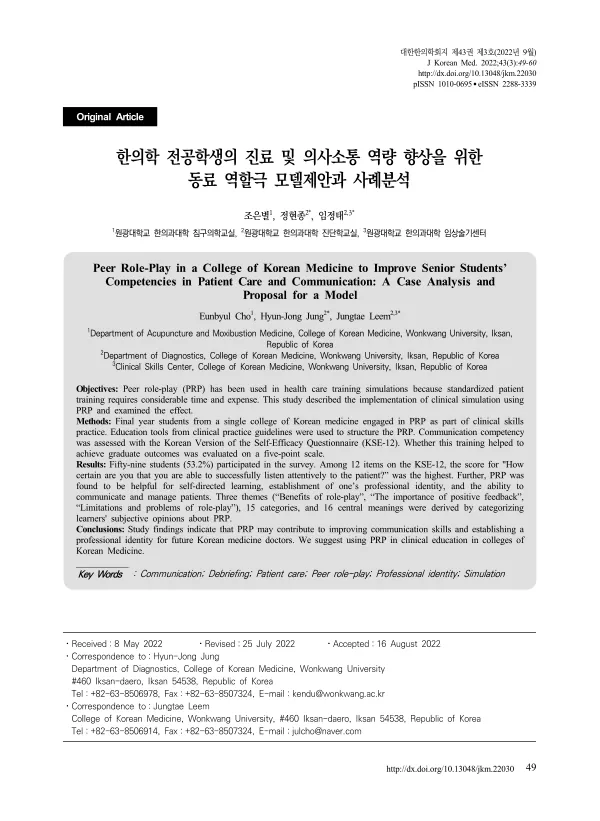

Peer Role-Play in a College of Korean Medicine to Improve Senior Students’ Competencies in Patient Care and Communication: A Case Analysis and Proposal for a Model
Cho Eb, Jung Hj, Leem Jt
Journal of Korean Medicine 43(3):49-64

첫 장 · 오픈액세스First page · open access
논문 소개Summary
표준화 환자로 진료수행을 가르치려면 시간과 비용이 많이 들어, 학생끼리 의사와 환자를 번갈아 맡는 동료 역할극이 대안으로 쓰여 왔습니다. 그런데 기존 연구들은 준비까지 포함한 전체 절차를 구체적으로 적어 두지 않았고, 학습자 설문에 신뢰도·타당도가 확보된 도구를 쓴 경우도 없었습니다. 이 논문은 다른 대학이 따라 할 모델을 내놓기 위해, 한 한의과대학의 시행 과정을 자세히 기술하고 타당화된 설문지로 의사소통 자기효능감을 재며 학습자 의견을 함께 보고합니다.
2021년 원광대학교 한의과대학 4학년 111명이 임상술기실습에서 동료 역할극을 했습니다. 네댓 명이 한 조를 이루어 한 증상마다 의사조와 환자조를 배정하고, 스물네 개 조가 짝을 지어 모두 스물네 번 했습니다. 학생마다 의사역과 환자역을 한 번씩 맡고 나머지는 참관했습니다. 시나리오가 성글어지지 않도록 한의표준임상진료지침 연계 교육도구 개발 연구의 진료수행평가 양식(스키마·상황지침·표준화환자 시나리오 서식)을 그대로 썼고, 스물아홉 개 임상표현 가운데 다른 조와 겹치지 않게 골랐습니다. 환자조만 질환을 정해 병력과 검진 소견을 짜고, 의사조는 증상만 안 채로 들어갑니다.
교육이 끝난 뒤 설문에 59명(53.2%)이 답했습니다. 한국어판 의사소통 자기효능감 측정도구 총점 평균은 89.37이었고, 열두 문항 가운데 「환자의 말을 주의 깊게 들을 수 있다」에 대한 확신이 가장 높았습니다. 학습자의 의견을 범주화해 「역할극의 이점」·「긍정적 피드백의 중요성」·「역할극의 한계와 문제점」 세 주제와 열다섯 개 범주, 열여섯 개 중심의미를 뽑았습니다. 동료 역할극이 지식보다 술기와 태도에 닿아 있고, 진료·의사소통 역량뿐 아니라 한의사로서의 직업 정체성을 세우는 데도 도움이 된다는 응답이 나왔습니다.
한계는 셋입니다. 학생의 수행 점수 같은 객관적 지표를 쓰지 않았고, 학업성취도를 정량적으로 재지 못했으며, 설문을 교육 뒤에만 해서 전후를 견줄 수 없었습니다. 평가 기준도 표준 지침이 아니라 연구팀의 경험에 기댄 것이어서 전국 한의과대학이 협의체를 꾸려 평가지침을 만들 필요가 있고, 증상마다 문항이 달라지는 체크리스트 대신 주제와 무관하게 쓸 총괄 등급척도가 필요하다고 적었습니다.
그럼에도 이 논문은 한의학교육에서 드문 동료 역할극의 방법과 효과를, 재현 가능하도록 설명과 실제 사례 동영상까지 붙여 보고했습니다. 남겨 둔 매뉴얼은 다른 대학이 따라 할 수 있고, 한의사 국가시험 실기시험 모듈에도 참고가 됩니다.
Teaching clinical performance with standardised patients costs a great deal of time and money, so peer role-play — students taking the parts of doctor and patient in turn — has been used as an alternative. Yet earlier studies never set out the whole procedure, preparation included, in concrete terms, and none of the surveys of learners used an instrument whose reliability and validity had been established. This paper sets out to offer a model other colleges can follow: it describes one college of Korean medicine's implementation in as much detail as possible, measures communication self-efficacy with a validated questionnaire, and reports what the learners themselves said.
In 2021, 111 fourth-year students at the College of Korean Medicine, Wonkwang University, carried out peer role-play in a clinical skills practicum. Groups of four or five were formed, a doctor group and a patient group assigned to each symptom, and twenty-four groups paired into twenty-four role-plays in all. Each student played the doctor once and the patient once, and observed the other six. To keep the scenarios from thinning out, the team used the clinical performance examination formats — schema, situation guide and standardised patient scenario forms — produced in the National Institute for Korean Medicine Development's project on educational tools linked to Korean medicine clinical practice guidelines, choosing from twenty-nine clinical presentations without overlap between groups. Only the patient group fixed the disease and built the history and examination findings; the doctor group entered knowing the symptom alone.
Fifty-nine students (53.2%) answered the post-course survey. The Korean version of the Self-Efficacy Questionnaire returned a mean total of 89.37, and of its twelve items, certainty about being able to listen attentively to the patient scored highest. Learners' subjective opinions were categorised into three themes — the benefits of role-play, the importance of positive feedback, and the limitations and problems of role-play — with fifteen categories and sixteen central meanings. Responses showed peer role-play reaching the domains of skill and attitude rather than knowledge, and helping not only with the intended clinical and communication competencies but with establishing a professional identity as a Korean medicine doctor.
The authors list three limitations. No objective measure such as a performance score was used in evaluating the effect; academic achievement was not assessed quantitatively; and because the survey was administered only after the course, before-and-after comparison was impossible. The evaluation criteria also rested on the research team's experience rather than a standard guideline, so they call for a nationwide consortium of Korean medicine colleges to develop assessment guidance. They add a proposal for a global rating scale usable regardless of topic, in place of checklists whose items shift with the symptom.
Even so, the paper reports the method and effect of a form of teaching rarely handled in Korean medicine education, with description detailed enough to reproduce and video of the actual sessions attached. The procedure and manual remain available for other colleges to follow, and serve as reference material for building practical modules for the national licensing examination. It belongs with the laboratory's other work on clinical education in Korean medicine, which continued into ultrasound teaching and virtual-patient chatbots.
인용Cite
Cho Eb, Jung Hj, Leem Jt. Peer Role-Play in a College of Korean Medicine to Improve Senior Students’ Competencies in Patient Care and Communication: A Case Analysis and Proposal for a Model. Journal of Korean Medicine. 2022;43(3):49-64. doi:10.13048/jkm.22030